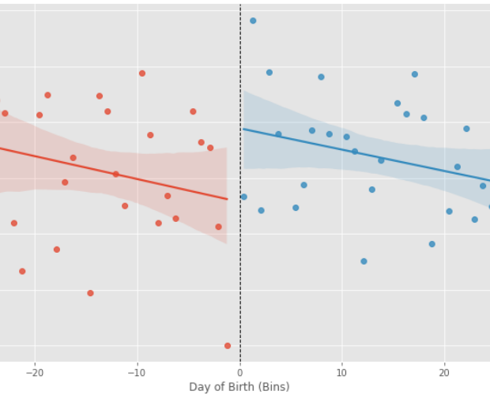
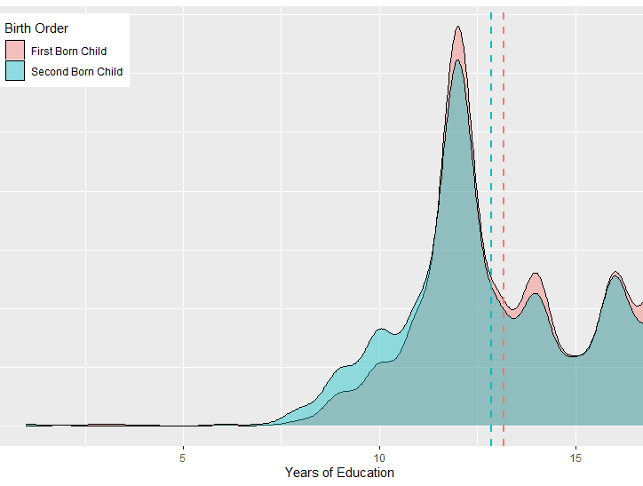
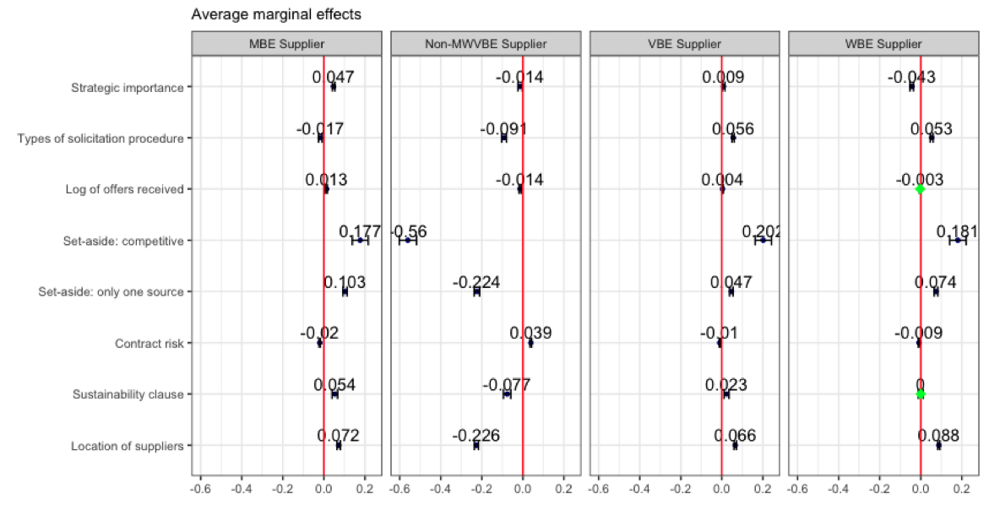
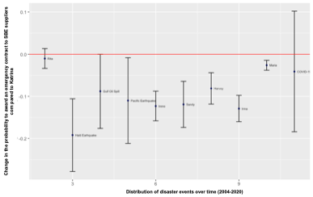
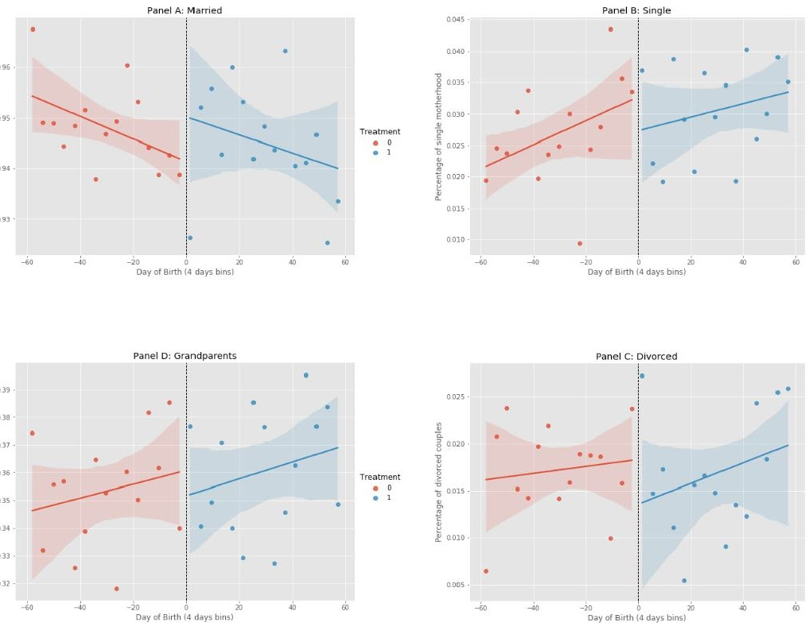

Research
Job Market Paper
Author: Andra Hiriscau
This study examines how paid maternity leave (ML) impacted fertility and mothers’ labor force participation in Romania. Specifically, I investigate the effects of a law regarding paid ML, which was implemented in 1990- less than one month- after the fall of the Communist regime in the country. The ML gives mothers the right to paid leave until the child turns one year old, and it offers 65% of monthly income before birth. This policy change was unexpected, creating conditions for a quasi-natural experiment. To establish causality, I examine the effects of this policy change using a regression discontinuity design and census data. I show that mothers who are eligible for ML are 3 percentage-points more likely to have an additional child than those ineligibles. The effect is persistent for seven years after the policy was implemented. I find no significant results regarding the mother’s labor force participation. I argue that the policy alleviated, to some extent, declining fertility rates, which were primarily caused by lifting bans on birth controls after the fall of the communist regime. These results have important implications regarding the shrinking working-age population and the ability to fund benefits programs.

Under Review
Authors: Andra Hiriscau and Mihaela Pintea
Link
This paper examines the effect of birth order on educational attainment in the United States and the underlying mechanism producing these effects. Using a family fixed effects model, we find negative birth order effects on educational outcomes. However, this effect varies depending on households’ income, being the strongest for households with the highest income and diminishes as households’ income decreases. In addition, we show that the timing of income across childhood is important for completed education, and the largest gap in educational attainment between siblings is between those who were born and spent their early childhood in wealthier households.

Authors:Ana-Maria Dimand, Andrea Stefano Patrucco, Evelyn Rodriguez-Plesa and Andra Hiriscau
Government outsources a significant part of operations to third sector organizations. The reliance on outside entities for public service delivery was even more evident during the COVID-19 pandemic. While the federal government seeks to advance social equity in government contracting through various types of policies that support small, minority, women, and veteran owned enterprises (SMWVBE), barriers to entry still exist. The study draws on federal government’s expenditures on the response to COVID-19 data. Through the lens of the portfolio management theory, we estimate logistic and multinomial logistic regressions to understand how equity in federal contracting practices was considered during an emergency and what strategies should the government consider moving forward to increase social equity in contracting. Overall, results show that non SMWVBE suppliers had a higher probability of contracting with the federal government. However, we note a higher probability of SMWVBE suppliers being awarded high strategic important contracts.
Practitioner’s points
- SMWVBE suppliers can effectively participate in federal contracts even when strategic items are involved.
- The federal government does not necessarily have to reduce competition to favor SMWVBE participation in government contracting.
- The probability of SMWVBE suppliers winning a federal contract is higher for strategic contracts with special environmental requirements.
- Low strategic important items favor the participation of SBE suppliers, while MWVBE suppliers are more favored in high strategic important contracts.
Keywords: federal government; procurement; contracting; equity; diversity

Average marginal effects from a multinomial logistic regression with 95% confidence intervals (Model 3)
Authors: Andrea Stefano Patrucco, Sushil Gupta and Andra Hiriscau
This study aims to better understand what factors favor the successful participation of small disadvantaged (SDB) suppliers in federal contracts during disaster events when procurement procedures are relaxed and more opportunities for SDBs exist due to the availability of emergency funds. To do that, we draw on data about the U.S. Federal Government emergency contracts awarded during the major disaster over the last 18 years. We estimate a logistic regression model to understand what factors favor SDBs participation in federal procurement contracts. We notice that the ability of SDB suppliers to win a federal contract has increased over time. However, to maximize the probability of SDB suppliers winning a contract, the Federal Government should configure the bidding procedure with specific features. From a research perspective, we propose a model that includes the main variables to be considered to study SDBs participation in government contracts. From a managerial perspective, our findings are able to inform 1) federal governments about what procurement variables are more important to be considered to reach the desired DEI goals; 2) SDB suppliers about the circumstances that maximize their chances of winning a federal contract, and so on what type of procurement contracts they should focus their bidding efforts.
Keywords: Federal Government; procurement; equity; diversity; emergency contracting
 Probability to award a federal contract to DBE suppliers through the different disaster events (reference event: Hurricane Katrina, 2004)
Work in Progress
Authors: Andra Hiriscau
I analyze the effect of two maternity leave (ML) reforms on family living arrangements using regression discontinuity and differences-in-differences methodology. The first reform extended ML from 60 days to one year and provided 65% of the mother’s income before childbirth. It did not significantly impact family living arrangements. The second reform extended ML from one year to two years and provided 85% of the mother’s income. It increased the probability that the mother was single at the time of birth. Results from the second reform support the independence hypothesis: an increase in women’s income reduces the need to pool resources and makes household work specialization less advantageous, leading to a higher probability of single motherhood.

Authors: Andra Hiriscau, Laëtitia Renée and Andrei Munteanu